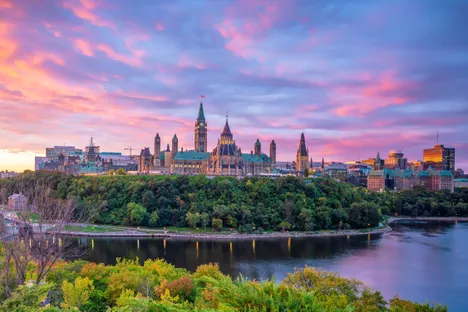

01 of 10
Ottawa, Ontario

 view map
view mapThough a small city compared to others across the country, Canada’s capital city is worth a visit at any time of year. For those interested in art and culture, Ottawa is home to seven of nine national museums, including the National Gallery of Canada. Visitors will also want to spend some time along the Rideau Canal, Ontario’s only UNESCO World Heritage Site. You can walk or cycle along the banks in the warmer months and in the winter the canal transforms into the world's longest skating rink. Rounding out the city’s offerings, Ottawa is home to a growing craft beer scene, many great restaurants, and numerous water-based activities on the Ottawa River.